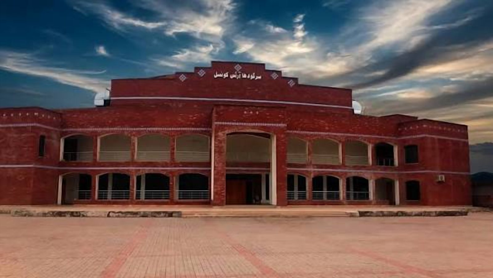

Home / Service Areas / Sargodha
Car Towing Sargodha
When your car breaks down or suffers an accident, having access to reliable car towing services can be vital. Whether you are using the roads in the city or on the motorways problems can occur.
TowingMechanicRecovery
Services in Sargodha
How we can help in Sargodha
Choose a service to open WhatsApp with your city already mentioned.


Our car towing and recovery service can help drivers to transport their vehicles safely. We offer towing services for all types of vehicles including cars, saloons, SUVs and more.
When looking for car recovery services near me, find the nearest tow truck or car transport service in Sargodha by getting in touch.
Professional Car Towing Sargodha
Your vehicle can break down at any time and it may cause further damage if you try to drive it. Our car towing service can help vehicle owners to get their car transported safely to their desired location.
If you have had engine failure, an accident, mechanical issues or unexpected breakdowns we can help.
Our services include:
- Emergency towing.
- Accident damaged vehicles.
- Breakdown assistance.
- Transport to workshop or garage.
- Local and long distance towing.
- SUV and heavy vehicle recovery.
- Vehicles that cannot be driven.
To make car recovery simple, easy and reliable.
Car Recovery Services Near Me
If your car has broken down you will likely look for car recovery services near me.
By choosing a local car recovery service you can easily arrange your transport. Whatever location your Broken down vehicles.
Cars needing to be transported to a mechanic.
Always give us details of what condition your car is in so we can choose the correct equipment.
Tow Truck Near Me Sargodha
If you are looking for a tow truck near me in Sargodha we can help to get your vehicle transported. We can offer towing services for all types of vehicles. Depending on what condition your vehicle is in we can arrange the correct towing service to avoid further damage.
We can offer towing for:
- Broken down cars.
- Accident damaged vehicles.
- Difficult situations on the side of the road.
- Transport to workshop.
- Long distance transport.
Just let us know where you want to pick up your vehicle and where you want it to go.
Heavy Duty Towing Sargodha
Sometimes you require more than just a standard car towing service. Larger SUVs, commercial vehicles and heavy vehicles may require specialist equipment. We offer heavy duty towing services.
Before we can arrange heavy duty towing please let us know the approximate weight, make and model of your vehicle and where it is and what condition it is in.
Car Towing Near Me
When your car breaks down suddenly whilst driving around Sargodha or between cities you may look for car towing near me. If your vehicle is no longer safe to drive we can help you find a suitable transport option.
We can help vehicle owners with towing needs including:
- Breakdown on the road.
- Accident recovery.
- Car won’t start.
- Transport to workshop/garage.
- Home to home transport.
- Local and out of city towing.
Where possible move to a safe place away from any moving traffic and turn on your hazard lights.
Towing Near Me Sargodha
Finding a reliable towing service near you can make a stressful situation easier. Rather than trying to drive your broken down car we can arrange transport for you depending on what mechanical issues your vehicle has.
We offer vehicle recovery services to ensure your car can be picked up easily, handled with care and taken to your chosen location.
When getting in touch please let us know:
- Where you want your vehicle picked up from.
- Make and model of your vehicle.
- What mechanical or accident related issues your vehicle has.
- Where you want your vehicle delivered.
- Any specific requirements.
This will help us to choose the correct towing vehicle and give you an estimated price.
Local And Long Distance Vehicle Recovery
Sometimes you may need to transport your vehicle further than locally. Whether it be due to mechanical issues, accident damage or other reasons you may need to transport your car from Sargodha to another city.
Depending on the type of vehicle, how far you want to transport it, what equipment we have and how quickly you need it we can talk through your requirements.
If you need to transport your vehicle to a local garage or further away please let us know your requirements.
Why Choose Us For Car Recovery?
It is important to choose the correct recovery service to ensure your vehicle is handled carefully.
Expect:
- Correct Equipment – The correct recovery equipment will be used for your vehicle size and condition.
- Careful Handling – Your vehicle will be loaded and secured correctly to reduce risk.
- Transparent Pricing – You will be given an estimated price.
- Easy Pick Up – Let us know exactly where you want your vehicle picked up.
- Flexible Drop Off – Talk through where you would like your vehicle dropped off at your chosen garage, workshop, home or elsewhere.
- Local And Out Of City – Ask what transport options we have for your required journey.
Book Car Towing Sargodha
Don’t risk causing any further damage by driving a vehicle that isn’t safe. We can arrange professional transport for your vehicle.
If you need car towing services, tow trucks near you, emergency accident recovery or heavy duty transport please get in touch.
Contact us today for reliable car towing services in Sargodha. We can talk through the best recovery option for your vehicle.vehicle is in, whether it be on the side of the road, outside your home or near a place of business just let us know your location and vehicle details.
How it works
Three simple steps
01
Contact Us
Call MECHOTOW or start a WhatsApp conversation.
02
Explain Your Situation
Share your location, vehicle details, and the type of assistance required.
03
Confirm Availability
Discuss service availability, pricing, and the next steps directly with the MECHOTOW team.
Sending a message or form does not confirm a booking or dispatch a driver. The team will confirm with you directly.
Also serving
Nearby service areas


On the map
Service area: Sargodha
City-level map showing the service area. Contact us with your exact location to confirm availability.
Frequently Asked Questions About Car Towing in Sargodha
1. Where can I get car towing in Sargodha?
Contact your local vehicle recovery company and let them know where you are and what model car you have so they can send the correct towing service to you.
2. How can I find local car recovery services?
Use a search engine to see what car recovery services are available locally. Check that they can come to you, how much it will cost, what equipment they have and how long they will take to arrive.
3. How much does towing a car cost in Sargodha?
The price of towing a car depends on how far you need it to go, what type of car it is, how damaged it is, what equipment they have and where it needs to go. Contact the towing service to get an idea of how much it will cost.
4. Can I get a tow truck local to me for my accident damaged car?
Yes, we can organise the correct recovery service for your accident damaged car. Tell us how damaged it is and what condition it is in so we can make sure we have the correct equipment.
5. What is the difference between towing and recovery?
Towing usually involves moving your vehicle from one place to another. Recovery can involve recovering vehicles from accidents, breakdowns and tricky situations on the road.
6. Can I get heavy duty towing service for my SUV?
Yes, depending on how heavy, large and damaged your vehicle is we can organise the correct heavy duty recovery vehicle. Check they have the correct equipment.
7. How can I find the closest towing service?
Use a search engine to find the closest towing service. Let them know where exactly you want them to collect your car from. Check how long they will take to arrive.
8. Can towing services move my car if it won’t start?
Yes, we can send the correct tow truck to move your car that won’t start to your preferred workshop/garage.
Need help right now?
Call or message MECHOTOW and explain your situation. The team will confirm availability and next steps with you.